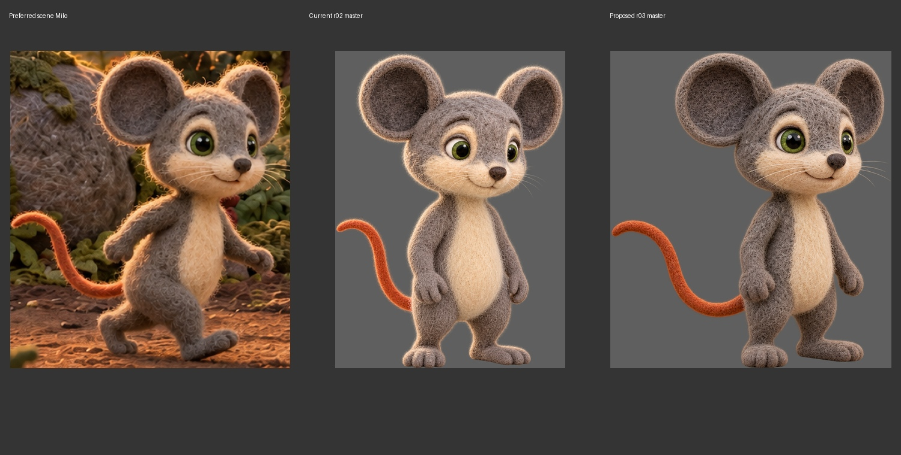
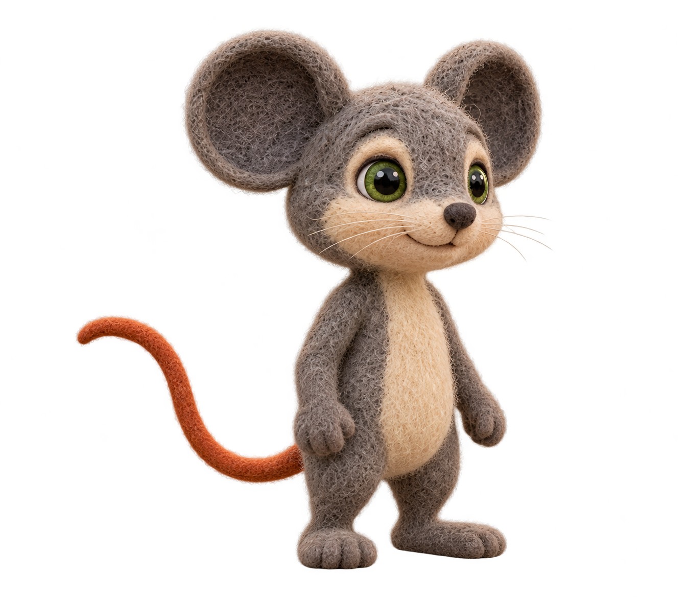
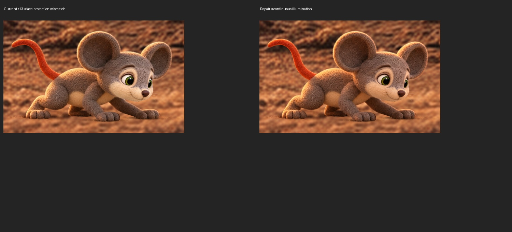

New candidates prepared from the owner's Scene 04 preference. The owner approved the r03 identity master on 2026-10-18. The face-lighting repair is active as s04_p02_r14; the previous r13 is preserved. Current identity authority is r03. Earlier atlas/expression references await refresh against it. No identity-family rollout or technical approval is inferred.
Left: preferred scene Milo. Middle: previous r02 (comparison captured before approval). Right: approved r03 under neutral lighting. Compare ear/head shape, eye whites, muzzle, torso and felt texture. The old master was not attached to the new generation.

Preferred source, full resolution · New transparent master, full resolution · Previous r02 master

The previous frozen face ellipse kept different lighting from the surrounding character. The new candidate transfers only a smooth illumination field to the original actor pixels, including the face. Model geometry is excluded; all scenery stays exact. Left: previous r13. Right: active r14 repair.

Exact prompts, source hashes, raw lighting suggestion, mask and processing parameters are preserved in this folder. The second comparison in the request repeated the same filename and is awaiting clarification.